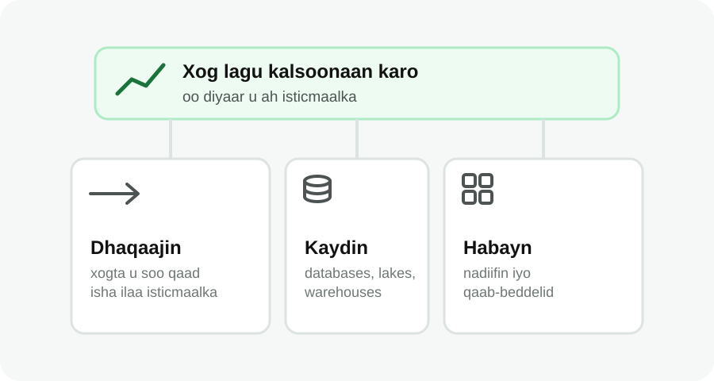
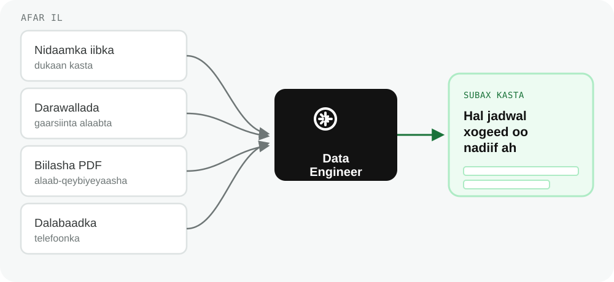

Data Engineering
Waxaad awoodi doontaa inaad sharaxdo waxa Data Engineer-ku dhiso iyo sababta shaqooyinka kale ee xogta la xiriira ay ugu tiirsan yihiin.
Dulmar
Falanqeeye (analyst) ayaa furay warbixin, wuxuuna helay saddex nuqul oo kala duwan oo isla tirooyinka iibka ah: mid duugoobay, mid aan dhammaystirnayn, iyo mid qaab khaldan ku jira. Xogtu way jirtaa, laakiin weli laguma kalsoonaan karo.
Ka hor inta aanay falanqeeyayaasha iyo Data Scientist-yadu xogta ku shaqayn, waa in si la isku halayn karo loo ururiyaa, loo kaydiyaa, loona diyaariyaa. Taasi waa shaqada Data Engineering.
Waa maxay Data Engineering?
Data Engineering wuxuu diiradda saaraa dhisidda iyo dayactirka nidaamyada dhaqaajiya, kaydiya, oo habeeya xogta si ay u noqoto mid lagu kalsoonaan karo oo diyaar u ah isticmaalka.

Waxa uu Qabto Data Engineer-ku
Shaqooyinka caamka ah waxaa ka mid ah:
Haddii falanqaynta xogtu ku saabsan tahay helidda faham muhiim ah, Data Engineering wuxuu ku saabsan yahay suurtagelinta helidda fahamkaas.
Maxay Data Engineering Muhiim u Tahay?
Haddii kaabayaasha xogtu (data infrastructure) daciif yihiin:
Dhibaato kasta oo liiskaas ku jirta waxay ku dhacaysaa qofka xogta u baahan. Shaqada Data Engineering badanaa lama dareemo marka ay si fiican u socoto, laakiin qof walba ayaa isla markiiba dareema marka ay shaqayn waydo.
Tusaale
Ganacsadihii jumlo iibiye ahaa ee casharka 2aad wuxuu xog ka helayaa afar meelood markiiba:

Afartaas meelood isku magac uma isticmaalaan alaabta, xogta laba ka mid ahna way soo daahdaa. Data Engineer-ku wuxuu dhisaa data pipelines isku keena afarta ilood, mideeya magacyada alaabta, isla markaana subax kasta diyaariya hal jadwal (spreadsheet) xogeed oo nadiif ah oo falanqeeyuhu isticmaali karo, iyada oo aan qofna looga baahnayn inuu maalin kasta gacanta ku qabto shaqadaas.